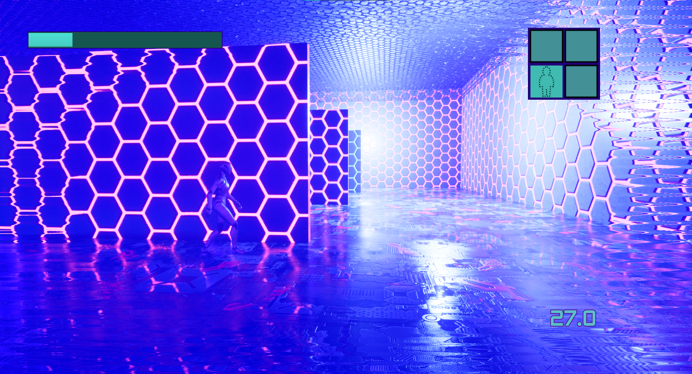
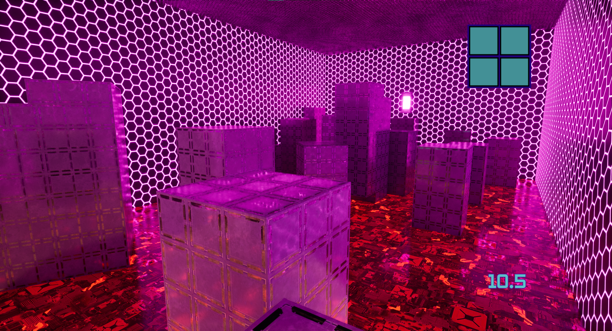
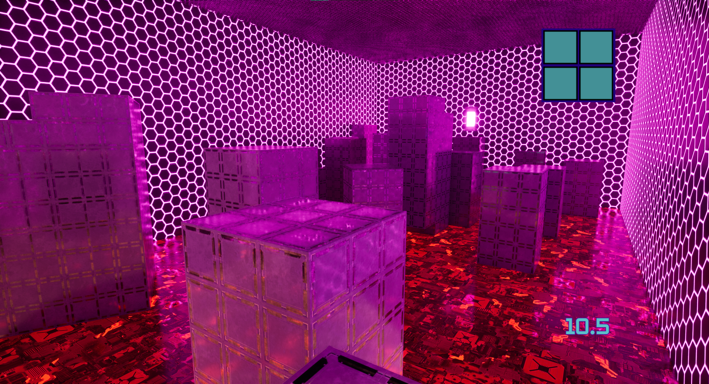
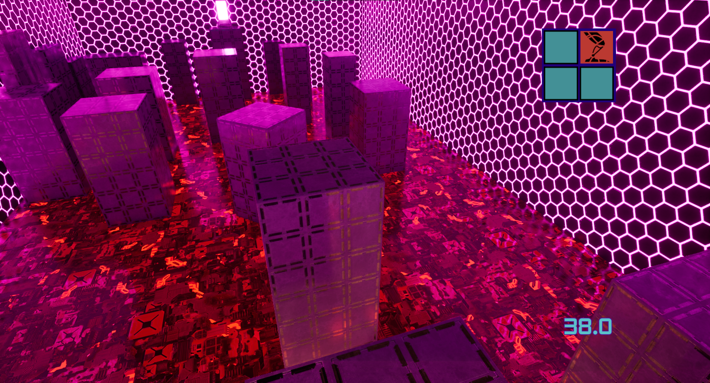
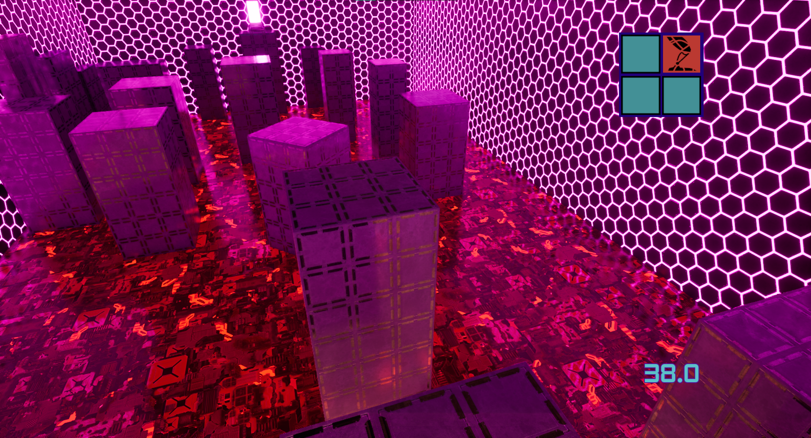

Project Overview
The first conceit for the game was inspired by playing a randomization mod for the popular metroidvania game Hollow Knight. I realized that much of why I enjoyed the original game was the process of learning how and where to use each new upgrade. Having to backtrack through my memories and level design to figure out how to use my new ability to move forward was a very compelling puzzle to solve, and the randomizer mod allowed me to solve the puzzle in entirely new ways. I realized I wanted to make this loop a core pillar of my next game project. I drew further inspiration from roguelikes, with their constant loop of resetting to discover new abilities. A game in which the player progresses through a metroidvania-type progression between the replay loop of a roguelike, while also granting them the agency to approach the progression in whatever order they chose.
After I'd been working on it independantly for some time, I later decided to revisit the project for a capstone class at my University. The Capstone class was split into two segments; the first I’d used to expand and fill out the gameplay mechanics: to add more depth to the randomization, improve the level design, and zero in on a few gaps in the design. I do wish I’d had more time to keep fleshing out the core design of the game - the randomization mechanics especially felt a lack of substance. However, by that point the second segment of the class had started, which was to focus on final polish and juice for the game. This involved surface level changes such as audio implementation and bug fixing. I also really enjoyed fine tuning various effects from the abilities - Particularly mechanical tidbits such as the recharge delays on stamina.

The player's goal is to collect four upgrade: Sprint, Invisibility, Double Jump, and the Cyber Eye (a vision upgrade). Collecting each ability made it easier for them to progress throughout the level by improving platforming abilities, adding different options to interact with the environment, or making it easier to evade enemies
Throughout the level, the player encounters patrolling enemies. While usually the enemies will pursue the player, activating the Invisibility upgrade allows them to avoid detection and slip past them.
 

Each time the player reset to a new run, aspects of the level would change: most notably the placement of the powerups and aspects of the level geometry. (the pictures above are the same room).

The Cyber Eye upgrade allows the player to reveal hidden aspects of the world. Such as being able to identify and pass through transparent walls, and attaching lights to the enemies making them easier to detect.
 

The last two upgrades - Sprint and Double Jump - provide the player with movement based abilities to both make platforming easier and evade enemies.